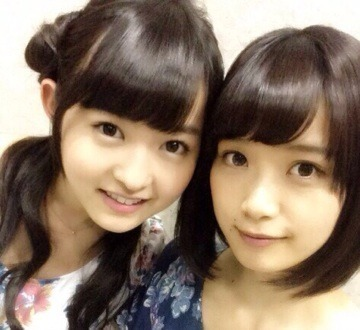
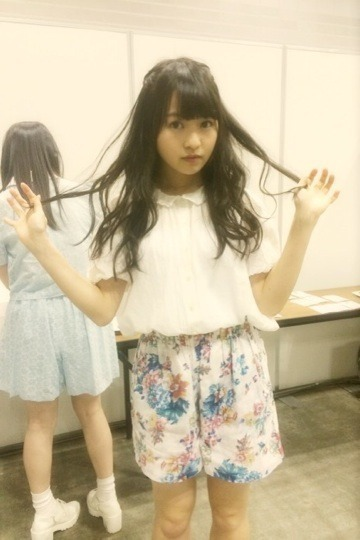
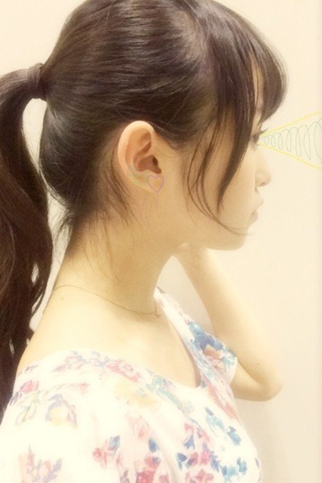

| 2014/04 22 Tue | 懐かれない。565回目 |
日曜日はパシフィコ横浜で
個別握手会でした〜！
2部 サイドお団子
3部 編み込みゆる巻
4部 三つ編み
5部 ポニーテール
アンダーライブのこと
プリンシパルのこと
表紙イラストのこと
他愛ない会話
楽しかった！！
まだまだ横アリについての
感想も多くて。
そこで踊ったまりっか'17を
見てから会いたくなった
という方がたくさん泣
横アリがきっかけでファンになった！
と言ってくださる方もたくさんで
本当に嬉しい。
私服はこれだ！！！

でん
チュニック色違いを
まいまいが全握で着てたのに気づいて、
合わせて個握で着ようって計画したの。
この花柄可愛んだ〜

にやにや

実はセットアップで
同じ柄のショーパンもあるっ
なかなか好評だった！
デート服っぽいよね。
春夏いっぱい着よう...

かわいいイヤリング欲しい。
この前かわいいパーツ買ったんだけど
どうやってイヤリングにしたら
良いか考え中です。
まりか
コメント(478)
2014/04/22 20:18